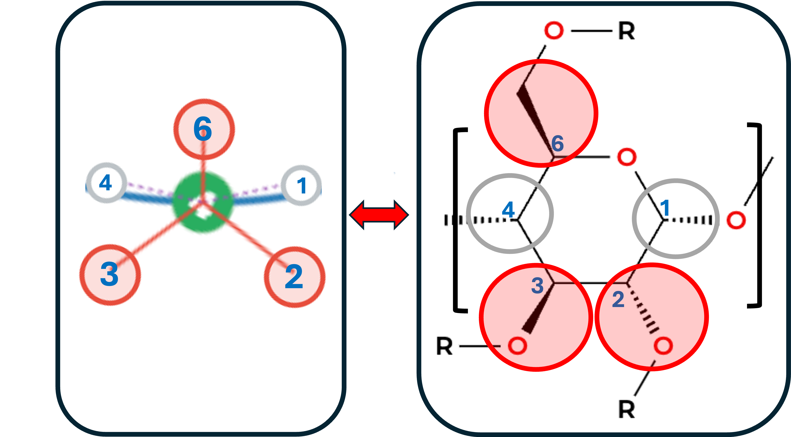

Interactive Work Area

In the cyclodextrin representation, each green circle represents an entire glucopyranose ring, simplifying its detailed structure. The numbers (1, 2, 3, 4, and 6) correspond to key features of the glucopyranose unit:
- Positions 1 and 4 are chiral centers
- Positions 2, 3, and 6 are both chiral centers and potential sites for substitution, as indicated by the "R" groups
This schematic allows clear visualization of both the chiral centers and the specific substitution sites, streamlining the complex molecular structure into an intuitive and interactive format that preserves all chemically relevant information.
Generated Nomenclature
Canonical Extended Nomenclature (CyDexID-EC)
No mutations applied.
Extended Nomenclature (CyDexID-E)
No mutations applied.
Compact Nomenclature (CyDexID-S)
No mutations applied.